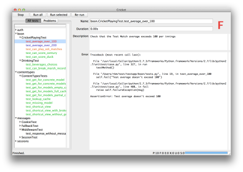

cricket
A GUI tool for running Python test suites. Part of the BeeWare suite.
cricket
Part of the  BeeWare suite.
BeeWare suite.
Cricket a graphical tool that helps you run your test suites.
Normal unittest test runners dump all output to the console, and provide very little detail while the suite is running. As a result:
You can't start looking at failures until the test suite has completed running,
It isn't a very accessible format for identifying patterns in test failures,
It can be hard (or cumbersome) to re-run any tests that have failed.
Why the name cricket? Test Cricket is the most prestigious version of the game of cricket. Games last for up to 5 days... just like running some test suites. The usual approach for making cricket watchable is a generous dose of beer; in programming, Balmer Peak limits come into effect, so something else is required...
Quickstart
Cricket has support for:
Pre-Django 1.6 project test suites,
Django 1.6+ project test suites using unittest2-style discovery, and
unittest test suites.
In your Django project, install cricket, and then run it:
$ pip install cricket
$ cricket-django
In your unittest project, install cricket, and then run it:
$ pip install cricket
$ cricket-unittest
This will pop up a GUI window: 
{kind=link}
Hit "Run all", and watch your test suite execute. A progress bar is displayed in the bottom right hand corner of the window, along with an estimate of time remaining.
While the suite is running, you can click on test names to see the output of that test. If the test passed, it will be displayed in green; other test results will be shown in other colors.
Problems under Ubuntu
Ubuntu's packaging of Python omits the idlelib library from it's base
packge. If you're using Python 2.7 on Ubuntu 13.04, you can install
idlelib by running:
$ sudo apt-get install idle-python2.7
For other versions of Python and Ubuntu, you'll need to adjust this as appropriate.
Documentation
Documentation for cricket can be found on Read The Docs.
Community
Cricket is part of the BeeWare suite. You can talk to the community through:
The BeeWare Users Mailing list, for questions about how to use the BeeWare suite.
The BeeWare Developers Mailing list, for discussing the development of new features in the BeeWare suite, and ideas for new tools for the suite.
Contributing
If you experience problems with cricket, you can log them on GitHub. If you want to contribute code, please fork the code and submit a pull request.